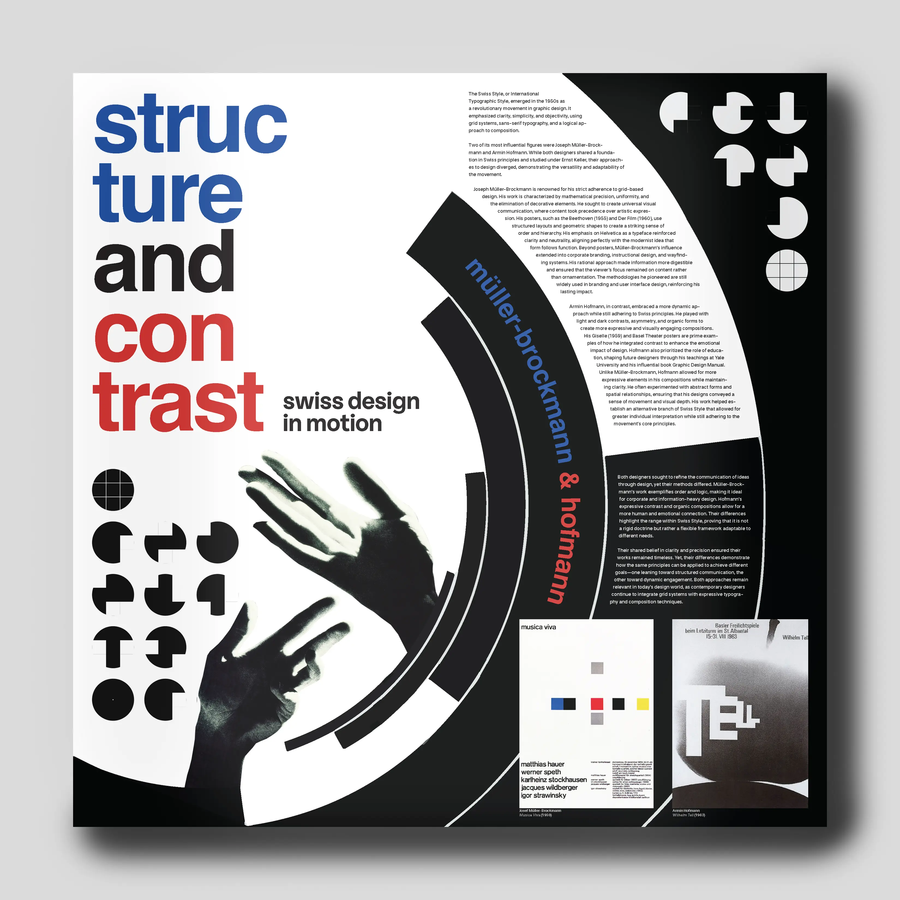
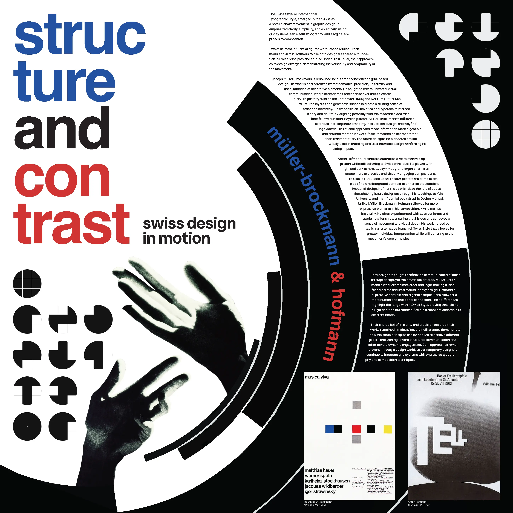

Case Study
Structure & Contrast: A Poster Project
An educational poster built to make an argument, not just illustrate one: that Josef Müller-Brockmann's grid-based Swiss precision and Armin Hofmann's more expressive, dynamic layouts are opposite ends of the same design lineage, not opposing schools. The poster is split into four quadrants that isolate and recombine their approaches to prove it.

Project brief
For this project, the brief was to create an educational poster on two Communication Design figures. I chose Josef Müller-Brockmann and Armin Hofmann specifically because their work sits at opposite ends of the same Swiss design tradition, with Müller-Brockmann's rigid grid systems against Hofmann's looser, more expressive compositions, which gave me a real design tension to structure the poster around instead of just presenting two unrelated bios side by side.
I built that tension directly into the layout: the poster is divided into four quadrants: type-only, image-only, type-dominant, and image-dominant, so each section isolates one variable in the structure-versus-expression argument. Read together, the four quadrants move the eye across the same spectrum Müller-Brockmann and Hofmann occupied in their own work, so the grid itself becomes part of the content rather than just holding it.
